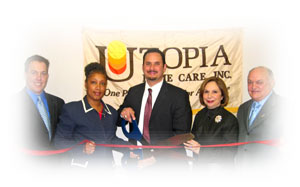
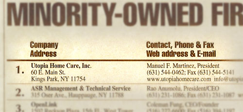
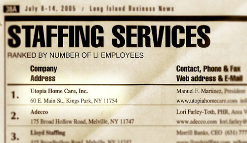

|  |
News Releases & Events
- Utopia Home Care named #1 Minority-Owned Firm on Long Island (November 4, 2005)
- Utopia Home Care Sponsors Children's Charity (October 10, 2005)
- Utopia Home Care Recognized by Long Island Working Partnership for Hiring Workers with Disabilities (October 7, 2005)
- Kings Park Blood Drive Collects Nearly 60 Pints (July 26, 2005)
- Utopia Shows Support For American Troops (July 21, 2005)
- Utopia Home Care named #1 Staffing Service on Long Island (July 8, 2005)
- Utopia Names Ruth E. Vega Silva Its "Aide of the Year" (June 6, 2005)
- Utopia Home Care Opens East Haven Office (April 13, 2005)
- Utopia Home Care Participates in Alzheimer's Association Long Island Annual Education Conference and Expo (March 18, 2005)
- Utopia Home Care Opens Bradenton Office (February 18, 2005)
- Utopia Home Care Opens New Hartford Office (February 7, 2005)
- Utopia Home Care Announces New Director of Patient Services (November 26, 2004)
- Utopia Home Care Opens New Kings Park Office (November 24, 2004)
- Utopia Home Care Participates in the Guardian Association's Expo 2004 (September 30, 2004)
- Utopia Home Care Honored at Maturity Works Job Fair for Hiring Older Workers (September 27, 2004)
- Utopia Home Care Sponsorship of Maturity Works Job Fair Featured on "The Future is Seniors" Television Program (August 30, 2004)
- Utopia Kings Park Community Blood Drive a Huge Success (July 19, 2004)
- Congressman Israel Recognizes Utopia Home Care for Programs to Hire Older Workers (July 9, 2004)
- Utopia Home Care Opens Norwalk Office (May 18, 2004)
- Suffolk County Executive Steve Levy Recognizes Utopia Home Care for Programs to Hire Older Workers (April 30, 2004)
- National Council on the Aging Provides Grant to Utopia Home Care for Hiring Older Workers (March 8, 2004)
- Utopia Home Care Job Opportunities Featured on "The Future is Seniors" Television Program (March 5, 2004)
- Utopia Home Care Offers Free Home Health Aide Training (January 7, 2004)
November 4, 2005
Utopia Home Care named #1 Minority-Owned Firm on Long Island
Long Island Business News, a top information source for Long Island Businesses, put Utopia Home Care on top of its list of island minority-owned or headed businesses in a recent issue dated November 4-10. Rankings were based on which firm held the most Long Island employees, Utopia ranking far ahead of the competitors with 610 employees.
Pictured below is a sample of the page. Larger sample (opens in a new window)
October 10, 2005
Utopia Home Care Sponsors Children's Charity
Pictured (left to right) Claudia Valencia, a personnel specialist from Queens; Annemarie Rahi, the administrator for New York City; and Shakama Cofield, a coordinator from Queens, were among the Utopia Home Care employees who participated in the third annual Walk for St. Mary's Kids, on October 1. Utopia was among the sponsors of the walk, and donated $5,000 to the St. Mary's Foundation for Children.
October 7, 2005
Utopia Home Care Recognized by Long Island Working Partnership for Hiring Workers with Disabilities
October is National Disability Employment Awareness Month
Pictured (left-right) are Ella Craanen, Regional Marketing Coordinator, VESID; Diane Martinez-Contino, Executive Vice President of Utopia Home Care; Lee Stringer, Featured Speaker, Author of Grand Central Winter and Sleep Away School.; Barbara Keefe, Training Supervisor, Utopia Home Care; Arlene Sapoff, Marketing Manager, Utopia Home Care; and Thomas Rosicki, Esq., Partner, Rosicki, Rosicki & Associates.
(Kings Park, NY) Utopia Home Care, Inc. is pleased to announce they are the recipients of an award from The Long Island Working Partnership, a VESID consortium, recognizing Utopia's exemplary efforts in hiring job seekers with disabilities.
October is nationally recognized as National Disability Employment Awareness Month. Utopia, one of Long Island's leading home health care agencies was recognized during the Long Island Working Partnership's 20th Annual Awards Breakfast Celebration, Ready for Tomorrow's Jobs Today on October 7th at Huntington Hilton Hotel in Melville.
BOCES nominated Utopia Home Care "for not only hiring and including employees with disabilities in their workforce, but going the distance for persons with disabilities". Utopia Home Care, along with twenty other local Long Island companies, was recognized by the Long Island Working Partnership for demonstrating innovative hiring practices, providing work setting accommodations and generally setting an example for other regional employers with respect to the hiring of persons with disabilities.
The Long Island Working Partnership (LIWP) is a group of business leaders, state and local government representatives and community service providers, who work together with the goal of enhancing employment opportunities for those with disabilities.
"We are pleased to have been nominated to receive this distinguished recognition of our efforts to recruit and employ workers from every segment of the Long Island workforce. We strive to create a compassionate and responsive work environment for the advantage of our clients. All of our employees are committed to this goal and our hard-working, qualified and efficient workers with disabilities have set the gold standard for all us and work daily to make a positive contribution to our organization, said Diane Martinez-Contino, Executive Vice President of Utopia Home Care.
Those interested in employment opportunities with Utopia Home Care, or its services, should call (631) 544-0462.
July 26, 2005
Kings Park Blood Drive Collects Nearly 60 Pints
Pictured (left to right): Diane Martinez-Contino, Executive Vice President, Utopia Home Care; Manuel F. Martinez, President/CEO, Co-Founder, Utopia Home Care; Angelina Martinez, Co-Founder, Utopia Home Care; Cheryl Martinez, granddaughter of the Martinez' preparing to donate blood.
Area residents donated a combined 56 pints of blood at the Kings Park community blood drive, last Friday. The contributions helped ease a shortage of blood across Long Island, and added to the public's awareness of the need for donations. The drive, coordinated by Kings Park-based Utopia Home Care, took place at the Kings Park Fire Department.
July 21, 2005
Utopia Shows Support For American Troops (July 21, 2005)
Pictured (from left to right): Manuel F. Martinez, Co-Founder, President and Chief Executive Officer of Utopia Home Care; Melinda Novak, Vice President of Long Island Game Farm; John Zaher, President of Public Relations and Marketing Group; David Martinez, Executive Vice President of Utopia Home Care; Linda Mendenhall-Kushner; and Brian Foley, Suffolk County Legislator (7th district).
Representatives from Utopia Home Care Inc. and other local organizations recently showed their support for American troops fighting in Iraq with a $500 donation.
Manuel F. Martinez, the Co-Founder, President and Chief Executive Officer of Utopia Home Care, presented a check for $500 to help further supply the troops.
The donation effort was coordinated by Linda Mendenhall-Kushner, a Huntington resident whose husband, Stanford, is currently serving in Iraq as a member of the New York Army National Guard 69th Infantry Regiment. Since Stanford shipped out, Mendenhall-Kushner has led a campaign to send troops donations of hard to come by items, including: snacks, DVDs and CDs.
July 8, 2005
Utopia Home Care named #1 Staffing Service on Long Island (July 8, 2005)
Long Island Business News, a top information source for Long Island Businesses, put Utopia Home Care on top of its list of area staffing services in a recent issue dated July 8-14. Rankings were based on which service held the most Long Island employees, Utopia ranking far ahead of the competitors with 610 employees.
Utopia is and will remain committed to providing solid job opportunities to caring people of all types. We offer competitive pay rates, flexible full and part-time hours, paid vacations, bonuses, 401k plan and much more. At many locations we provide free training for those who want to become certified home health aides and personal care aides. Positions are available at all of our locations. Call (631) 544-6005 for further information.
Pictured below is a sample of the page. Larger sample (opens in a new window)
June 6, 2005
Utopia Names Ruth E. Vega Silva Its "Aide of the Year"
Pictured (from left to right): David Martinez and Diane Martinez-Contino, both Executive Vice Presidents at Utopia Home Care; Wayne Horsley, the Babylon Town Councilman; Ruth E. Vega Silva, the Utopia Home Care Aide of the Year; Angelina Martinez, Co-Founder; Manuel F. Martinez, the Co-Founder, President and Chief Executive Officer; Manuel G. Martinez, an Executive Vice President and Paul Martinez, an administrative assistant.
Ruth E. Vega Silva, who has served for 16 years as a live-in personal care aide for Utopia Home Care, recently received the company's first annual Aide of the Year Award.
Utopia President Manuel F. Martinez presented Silva with a plaque and a $500 award during the company's annual corporate breakfast, a gathering of about 75 office staff members from Utopia locations in New York, Connecticut and Florida.
In addition, Wayne Horsley, a councilman from the Town of Babylon, presented a proclamation to Silva, who resides in North Babylon.
"Ruth is sweet, caring, and good to the patients. She is an excellent aide and the families love her," Sue Riebe, Silva's nursing supervisor, said.
Silva was born in Colombia and later moved to Barbados, where she married and had two children. Her son serves in the Canada armed forces and her daughter, who fulfilled Ruth's own dream to become a nurse, serves patients in Canada.
Silva immigrated to the United States 30 years ago, and soon began to pursue her lifelong dream of caring for others. She joined the Utopia Home Care family in 1989 and became a certified live-in personal care aide.
As a live-in aide, Silva remains in the home on a 24-hour basis and is trained to provide personal care and related services, she works under the direction of the branch administrator and is supervised by a Registered Nurse and the Director of Patient Services.
Over the years, families of patients that Silva has cared for have sent letters to Utopia Home Care headquarters in Kings Park, praising her. "Ruth is a mature woman of highest character," one family wrote. "She is warmhearted, trustworthy, reliable and dedicated to her work. She was never too tired or impatient to answer our mother's calls... We are grateful to Ruth not just for caring for, but improving the quality of life for our mother in her final years."
A trademark of Silva's care has been her interest in the cultural backgrounds of her patients and the use of that knowledge to prepare delicious, yet nutritious, ethnic meals. She also entertains patients with her storytelling abilities and has often visited with patients on her days off. One family compared Silva to a combination of Mary Poppins and Mother Teresa.
Upon learning that Silva would receive the Aide of the Year Award, the family of Silva's current patient offered its praise. "Ruth is very deserving of all the recognition you can give her," the family said. "She gives the best of care with love, dedication, and utmost competency. We are very blessed to have Ruth as part of our family. Ruth has the patience of a saint, tremendous energy and a cheerful disposition. Her outstanding care has given new life to my mother who, at the age of 97, is doing better than ever, thanks to Ruth."
April 13, 2005
Utopia Home Care Opens New East Haven Office
Office Opened to Meet Connecticut's
Growing Need for Quality Home Health Care Services
Pictured (left-right) are Mike Magarian, Director of Business Development and Operations, Utopia Home Care; Mary Cacace, Director, East Haven Chamber of Commerce; Todd Dawid, Administrator, Utopia Home Care; Joanne Mallinson, President, East Haven Chamber of Commerce; Diane Martinez-Contino, Executive Vice President; Utopia Home Care; Manuel F. Martinez, President/CEO and Co-Founder, Utopia Home Care; David Martinez, Executive Vice President, Utopia Home Care; Angelina Martinez, Co-Founder, Utopia Home Care; and Manuel G. Martinez, Executive Vice President, Utopia Home Care.
(East Haven, CT) At a ceremony attended by local officials, community leaders, company leadership and employees, Utopia Home Care, Inc. officially opened its new East Haven office and held an open house to celebrate the expansion of its services to East Haven area residents. The office will serve as Utopia's Connecticut headquarters and East Haven field office and will allow the company to meet Connecticut's growing need for quality home health care services.
"We are pleased to open this new facility today with so many friends of Utopia Home Care by our side. With the efficiencies and technology incorporated into this new office, we will be better able to serve East Haven and Connecticut's residents and its growing need for home health care services.," said David Martinez, Vice President of Utopia Home Care.
Following the ceremony, guests were invited to take part in an open house. Utopia Home Care has five offices in Connecticut with over 500 employees. In addition to home health care services, it also provides Assisted Living Services at multiple locations throughout the state.
March 18, 2005
Pictured (left-right) are Arlene Sapoff, Marketing Manager, Utopia Home Care; Kathleen Peykar, RN, MS, Director of Patient Services, Utopia Home Care; Mary Ann Malack-Ragona, Executive Director/CEO, Alzheimer's Association; and Michele White, Program Director, Alzheimer's Association. On Wednesday, March 9th, The Alzheimer's Association held its Annual Education Conference and Expo at the Smithtown Sheraton. Sapoff and Peykar participated by presenting a workshop entitled "Home Health Care and Tips in Care Giving." For more information about the Alzheimer's Association Long Island contact (631) 580-5100 or visit www.alzheimersli.org.
February 18, 2005
Utopia Home Care Opens Bradenton Office
Pictured left to right are Amanda Grafius, coordinator; Jamie Topolski, RN, Director of Nursing; Wayne Poston, Mayor of Bradenton; Jeanne Williams, Office Manager; and Robert Fritz, VP/Administrator at the ribbon cutting for Utopia Home Care's newest office in Bradenton, Florida. Also present at the Grand Opening were Michael Scott, Chamber of Commerce; Larry Burke, Gulf Coast Business Review; Wanda Mui and Associates; several employees from Raymond James and Assocs.; and Utopia Home Health Aides.
February 7, 2005
Utopia Home Care Opens New Hartford Office
(Hartford, CT) Pictured (left-right) are Todd Dawid, Administrator, Utopia Home Care, Inc.; Hartford Councilwoman Jo Winch; David Martinez, Executive Vice President, Utopia Home Care; Angelina Martinez, Utopia Home Care Co-Founder; and Manuel F. Martinez, Utopia Home Care Co-Founder. Utopia Home Care recently held a grand opening ceremony and open house at its new Hartford branch office located at 999 Asylum Avenue, 5th Floor. The office will allow Utopia to meet the needs of Hartford's growing aging and infirm populations. In addition to home health care services, the company also provides Assisted Living Services at subsidized senior and congregate housing in several Connecticut locations. For more information about services and job opportunities with Utopia Home Care contact (860) 882-0000.
November 26, 2004
Utopia Home Care Announces New Director of Patient Services
(Kings Park, NY) - Utopia Home Care, Inc. announced today that it has promoted Kathleen Peykar, RN, MS to the position of Director of Patient Services. Peykar, a resident of Kings Park, has been with Utopia Home Care since 1998 and has held positions as Performance Improvement Coordinator and Assistant Director of Patient Services. As Director, Peykar will be overseeing the clinical operations of 21 offices in New York, Connecticut and Florida. This position was previously held by Dolores Serri for 14 years. She has stepped down to work part time as Clinical Services Advisor for the company.
Peykar received her nursing degree in England in 1968 and earned a Masters Degree from Stony Brook University with an emphasis in gerontology in 1997. After working in home care since 1992 and gaining broad experience as a field nurse and nurse supervisor, Peykar came to Utopia Home Care in 1998 as a Performance Improvement Coordinator. She later assumed the responsibilities as Assistant Director of Patient Services.
For more information about Home Health Aide or Personal Care Aide job opportunities and free training at Utopia Home Care, contact (631) 544-0462 in Suffolk County, or (516) 334-4807 in Nassau County.
November 24, 2004
Utopia Home Care Opens New Kings Park Office
Office Opened to Provide Expanded Services to Long Island's Growing Aging and Infirm Populations
(Kings Park, NY) Utopia Home Care announced today that it will hold a grand opening ceremony and open house at its new branch office located at 1 Village Plaza, Kings Park (next to Kings Park railroad station) on Friday, December 3rd, 2004 from 11:00 a.m. to 4:00 p.m. with a ribbon cutting ceremony scheduled for 11:30 a.m. Information about job opportunities will also be provided.
The new office represents an expansion of services previously provided from Utopia's corporate headquarters also located in Kings Park. The office will allow Utopia to meet the needs of Long Island's growing aging and infirm populations. Currently, Utopia provides home health care services to thousands of residents. The new office brings to six the number of Utopia's Long Island branch offices.
"As we continue to grow, we invite those interested in becoming home health aides to join our growing family and our commitment to provide excellent and compassionate care," said Manuel G. Martinez, Executive Vice President, Utopia Home Care, Inc.
During the open house, refreshments and raffle prizes will be provided. Guests will be invited to take part in a free blood pressure screening. Information about job opportunities and free training classes to become Home Health Aides or Personal Care Aides will be provided. To attend the open house or to learn more about job opportunities with Utopia, contact (631) 544-0462.
September 24, 2004
Utopia Home Care Participates in the Guardian Association's Expo 2004
Utopia Home Care's Bradenton, Florida office participated in the Guardian Association of Pinellas County's Expo 2004. Pictured in front of Utopia's booth is Jeanne Williams. The Guardian Association is a 501 (c) 3 charitable organization committed to promoting a better quality of service for elders by developing and improving the capabilities of guardians and their relationship with other entities within the community.
September 21, 2004
Utopia Home Care Honored at Maturity Works Job Fair for Hiring Older Workers
Pictured (left-right) are Michael Massamino, NASA Astronaut; Mary Hines, Deputy Commissioner of the New York State Department of Labor; Elvira Lovaglio-Duncan, Program Director for the National Council on the Aging's (NCOA) Long Island office; William Wheeler, Tuskegee Airman; Manuel G. Martinez, Executive Vice President, Utopia Home Care, Inc.; and Arlene Sapoff, Marketing Manager, Utopia Home Care.
Utopia Home Care was recognized with the Best Company Award for hiring the most workers on Long Island, over the age of 55, during the past 18 months. The award was presented to Utopia by NCOA at its Maturity Works Job Fair held at the Cradle of Aviation Museum in Garden City, New York. The Job Fair was geared towards mature workers 40 years of age and older. Utopia is an active recruiter of mature workers and offers free training for those who want to become Certified Home Health Aides.
Utopia Home Care, the largest minority owned company on Long Island, is a major sponsor of the upcoming Maturity Works Job Fair and Lifestyles Expo, which will be held on September 21, at the Cradle of Aviation Museum in Garden City. The Fair is expected to bring more than 3,500 mature job seekers (age 40+) to the attention of 100 potential employers and other exhibitors.
Manuel F. Martinez, Utopia Home Care's president, said that Utopia Home Care is committed to hiring mature workers. He continued that Utopia is aware from experience that mature workers are highly reliable and have a strong work ethica and that it is Utopia's ongoing policy to give mature workers the opportunity to use their experience and skills—or to acquire new skills—in the home healthy care industry. To reinforce this opportunity, Utopia offers free Home Health Aide training at all of its Long Island and Queens locations.
Because of this experience, Utopia urges all Long Island industries to take advantage of the highly skilled and reliable pool of mature workers by joining them as Job Fair exhibitors. For more information about job opportunities at Utopia, contact (631) 544-0462.
August 30, 2004
Pictured (left-right) are Eady David, Public Relations Coordinator for the National Council on the Aging's (NCOA) Long Island office; Elvira Lovaglio-Duncan, Program Director for the National Council on the Aging's (NCOA) Long Island office; and Arlene Sapoff, Marketing Manager for Utopia Home Care, Inc.
Arlene Sapoff, Marketing Manager for Utopia Home Care, recently appeared as a guest on "The Future is Seniors" public access television program produced by NCOA. She discussed Utopia Home Care's sponsorship and participation in NCOA's Maturity Works Job Fair scheduled for Tuesday, September 21, 2004 at the Cradle of Aviation Museum in Garden City, New York. The Job Fair is geared towards mature workers 40 years of age and older. From the host to production staff, the program is produced by senior volunteers and staff. The program airs on Cablevision's Public Access Channel 20 at 10:30 a.m. on Thursdays in Nassau County, Babylon and Huntington; 4:00 p.m. on Thursdays in Smithtown, Islip and Brookhaven; and 3:30 p.m. on Saturdays in Riverhead and the east end. Utopia is an active recruiter of mature workers and offers free training for those who want to become a Certified Home Health Aides. For more information about job opportunities at Utopia contact (631) 544-0462. For more information about the Maturity Works Job Fair contact NCOA at (516) 485-5431.
July 19, 2004
Utopia Kings Park Community Blood Drive a Huge Success
Pictured (left-right) are, Bruce Doncaster, Donor Specialist, Long Island Blood Services; Manuel Martinez, Sr., President Utopia Home Care; Wayne Reichert, District Manager, Kings Park Fire Department; Jamie Ann Colangelo of Kings Park seen donating blood; Suffolk County Legislator Lynne Nowick; and Philip Sciarillo, Publisher, Smithtown Messenger.
On Friday, July 16th, Utopia Home Care, along with Suffolk County Legislator Lynne Nowick, in an effort to address the current blood shortage and elevate awareness of the need for blood donations on Long Island, sponsored a blood drive at the Kings Park Fire Department. Thanks in part to raffle donations from over 25 local businesses, the blood drive was a huge success for it helped to collect over 80 pints of blood. As a home health care agency, Utopia Home Care provides care for the aging and infirm and sees the need for blood on a daily basis.
July 9, 2004
Congressman Israel Recognizes Utopia Home Care for Programs to Hire Older Workers
Pictured (left-right) are Elvira Lovaglio-Duncan, Program Director, National Council on the Aging; Congressman Steve Israel; Diane Martinez-Contino, Executive Vice President, Utopia Home Care; Arlene Sapoff, Marketing Manager, Utopia Home Care; and Madelyn Longo, Field Nurse Supervisor, Utopia Home Care.
Israel is seen congratulating Utopia upon receiving a grant in the amount of $18,000 from the National Council on the Aging in support of its programs to recruit and hire older workers during 2003. Ms. Longo is a Utopia employee hired with the assistance of the grant. Utopia has qualified for additional grant funding in 2004 and is currently seeking persons aged 55 and older to fill various positions, including those of home health aide and personal care aide. A free training program is offered for those seeking these positions. For more information contact (631) 544-0462.
May 18, 2004
Utopia Home Care Opens Norwalk Office
Office Opened to Provide Services to Norwalk's Growing Aging and Infirm Populations
Pictured (left-right) are Connecticut General Assembly Representative Bob Duff (137th District); Manny Martinez, Jr., Executive Vice President, Utopia Home Care; David Martinez, Executive Vice President, Utopia Home Care; Alanna Kabel, Mayor's Director of Marketing and Business Development, City of Norwalk; Todd Dawid, Connecticut Administrator, Utopia Home Care.
(Norwalk, CT) At a ceremony attended by local officials, community leaders, company leadership and employees, Utopia Home Care, Inc. officially opened its new Norwalk office and held an open house to celebrate the expansion of its services to Norwalk area residents. The office will allow Utopia to meet the needs of Norwalk's growing aging and infirm populations.
"We are pleased to open this new facility today with so many friends of Utopia Home Care by our side. With the efficiencies and technology incorporated into this new office, we will be better able to serve Norwalk area residents and its growing aging and infirm populations," said David Martinez, Executive Vice President of Utopia Home Care.
Following the ceremony, guests were invited to take part in a free blood pressure clinic and were provided with tours of the new facility. The office replaces Utopia's office located at South Washington Street. Utopia Home Care has four offices in Connecticut with over 500 employees. In addition to home health care services, it also provides Assisted Living Services at subsidized senior and congregate housing around Connecticut.
April 30, 2004
Suffolk County Executive Steve Levy Recognizes Utopia Home Care for Programs to Hire Older Workers
Pictured (left-right) are Manny Martinez, Jr., Executive Vice President, Utopia Home Care; Diane Martinez-Contino, Executive Vice President, Utopia Home Care; Elvira Lovaglio-Duncan, Program Director, National Council on the Aging; Suffolk County Executive Steve Levy; Manny Martinez, Sr., President and Founder, Utopia Home Care; Arlene Sapoff, Marketing Manager, Utopia Home Care; and Madelyn Longo, Field Nurse Supervisor, Utopia Home Care.
Executive Levy is seen congratulating Utopia upon receiving a grant in the amount of $18,000 from the National Council on the Aging in support of its programs to recruit and hire older workers during 2003. Ms. Longo is a Utopia employee hired with the assistance of the grant. Utopia has qualified for additional grant funding in 2004 and offers free training programs for people seeking these positions. For more information contact (631) 544-0462.
March 8, 2004
National Council on the Aging Provides Grant to Utopia Home Care for Hiring Older Workers
Open Houses Scheduled at Various Locations to Describe Job Opportunities for Older Workers
The National Council on the Aging (NCOA) announced that Utopia Home Care, Inc. is the deserving recipient of $18,000 in grants in recognition of its programs in 2003. The programs were designed to recruit and hire older workers for Utopia Home Care's six locations in Nassau and Suffolk Counties. Utopia Home Care has also qualified to receive a grant for 2004. It is seeking persons age 55 and older to fill various positions, including those of home health care aide, personal care aide and office staff. Utopia's efforts to recruit mature workers recognizes current labor demands in a rapidly growing home health care field. They are meeting these demands by hiring older workers who are working later in life or returning to the workforce after retirement.
"We are pleased to partner with Utopia Home Care. This coincides with our efforts to encourage local businesses to hire mature workers. Utopia Home Care recognizes that older Americans have the necessary skills, commitment and strong work ethic to make a positive contribution to any organization. We applaud Utopia's efforts to recruit and hire older workers to meet their labor demands," said Elvira Lovaglio-Duncan, program director for The National Council on the Aging.
As part of its effort to hire older workers, Utopia Home Care sponsors and participates in numerous job fairs and advertises in publications that cater to older Americans. In the coming weeks it is holding open houses with the National Council on the Aging at its various Long Island locations.
"Recruiting caring and compassionate employees and making them a part of our family-owned business has been the key to our company's successful growth. We recruit new employees from every demographic and age group in our society. Over the years, our company has gained a reputation from our clients, many of whom are elderly, for our compassion and caring. Our older workers often come to us with greater experience and a special dedication for caring," said Manuel Martinez, Jr.
In recent years older workers have decided to work later in life. Due to higher costs of retirement as well as tax changes that allow seniors after age 65 to work while collecting social security benefits without incurring a tax penalty. At the same time, due to medical advances that allow for more advanced treatment at home, shorter hospital stays and greater life expectancy, providing home health services is one of the fastest growing industries on Long Island and in the country. By enhancing its programs to recruit older workers, companies such as Utopia Home Care can meet its demands for labor while providing jobs for older workers.
Utopia Home Care offers wages that are among the highest, as well as extensive employee benefits. Free ongoing training courses are provided for those who desire to become certified Home Health Aides and Personal Care Aides. Classes are regularly scheduled at all six Long Island locations and in New York City.
The National Council on the Aging and Utopia Home Care are holding open houses from 10:00 a.m. - 1:00 p.m. at Utopia Home Care's offices prior to free training courses in various locations in accordance with the following schedule: March 23 - Riverhead (631-369-5500); March 24 - Rockville Centre (516-764-3100); Babylon - April 13 (631-587-8090); Patchogue - April 14 (631-654-8006); Westbury - May 4 (631-334-4807); Kings Park - May 5 (631-544-0462). At each open house, refreshments will be provided and job opportunities will be described at Utopia Home Care and in general for workers 55 and older. The National Council on the Aging is providing many incentives for eligible older workers.
March 5, 2004
Utopia Home Care Job Opportunities Featured on "The Future is Seniors" Television Program
Pictured (sitting) are Eady David, Public Relations Coordinator for the National Council on the Aging's (NCOA) Long Island office with Arlene Sapoff, Marketing Manager for Utopia Home Care, Inc. Sapoff recently appeared as a guest on 'The Future is Seniors' public access television program produced by NCOA. She discussed job opportunities in general and for workers 55 years of age and older at Utopia Home Care. From the host to production staff, the program is produced by senior volunteers and staff. Also pictured (left-right) are Marie Trent, Wilma Willis, Pat Tropea, Cathie Koster, Peggy Concadoro and Susan Weiss. The program airs on Cablevision's Public Access Channel 20 at 10:30 a.m. on Thursdays in Nassau County, Babylon and Huntington; 4:00 p.m. on Thursdays in Smithtown, Islip and Brookhaven; and 3:30 p.m. on Saturdays in Riverhead and the east end. For more information about job opportunities at Utopia contact (631) 544-0462.
January 7, 2004
Utopia Home Care Offers Free Home Health Aide Training to Fill Growing Need for Home Care Services
Ongoing Free Training Courses Available throughout Long Island and in New York City
(Kings Park, NY) Utopia Home Care, Inc. announced that it is seeking employees in each of its service areas including, Home Health Aides, Personal Care Aides, Live-in Aides, Homemakers, Companions, Bilingual Aides (in various languages), Certified Nursing Aides, Licensed Practical Nurses, and Registered Nurses. The company offers wages that are among the highest, as well as extensive employee benefits. Free ongoing training courses are provided for those who desire to become certified Home Health Aides and Personal Care Aides. Classes are regularly scheduled at all six Long Island locations and in New York City.
Due to medical advances that allow for more advanced treatment at home, shorter hospital stays and greater life expectancy, providing home health services is one of the fastest growing industries on Long Island and in the country. According to the Bureau of Labor Statistics Occupational Outlook Handbook 2002-3, employment of Home Health Aides is expected to grow 62% between 2000 and 2010 from 414,000 to 672,000.
In meeting these demands for services, Utopia has become experienced in every level of home care, including accident rehabilitation, pediatric care, elder care, treatment for patients with disabilities, as well as for those with long term and short term illness. Meeting these demands for increased services with new employees has been vital to Utopia's success. For example, Utopia has long been the leading provider of Live-In-Aides, which includes providing their transportation to and from the client's home.
"Recruiting caring and compassionate employees and making them a part of our family-owned business has been the key to our company's successful growth. We offer our employees the opportunity to begin a career in the health care industry and grow with our company, which currently has over 1350 employees," said Manuel Martinez, Jr.
With nine conveniently located offices in the New York Metro area, Utopia offers its new employees a free two-week on-going training course. In addition to full and part-time flexible schedules, employees receive paid vacations, referral bonuses, extra weekend and holiday pay, ongoing paid in-service training, a free subscription to The Home Health Aide Digest and are eligible for a 401K plan and health benefits.
Free training courses for Home Health Aides and Personal Care Aides begin on January 26th at the company's Riverhead and Rockville Center locations; February 2nd in Queens; February 17th in Babylon and Patchogue; and March 8th in Westbury, Kings Park, and Queens. Home Health Aide training classes are for two weeks. Personal Care Aide training lasts one week. For information call (631) 587-8090 (Suffolk), 516-764-3100 (Nassau) and 718-429-5221 (Queens).
Utopia Home Care's HIPAA Notice of Privacy Practices